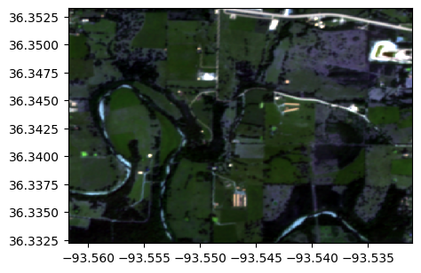
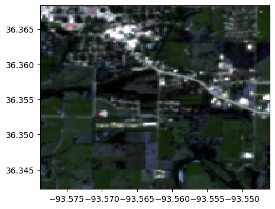
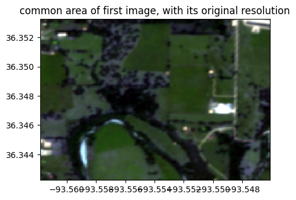
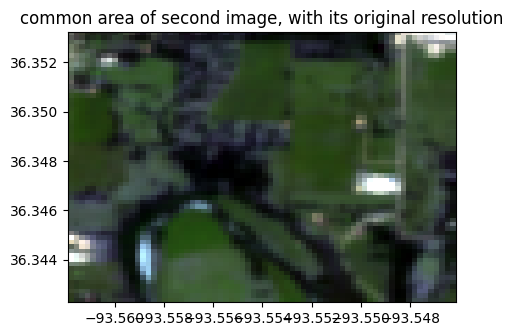
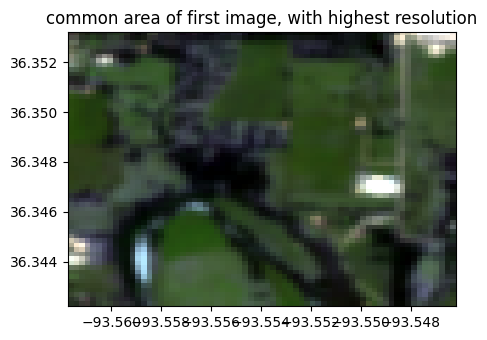
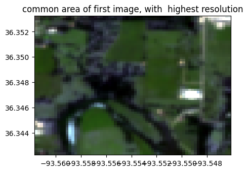
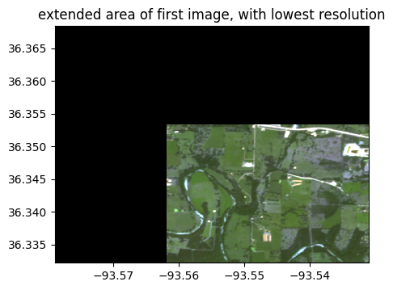
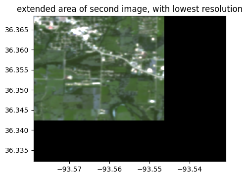
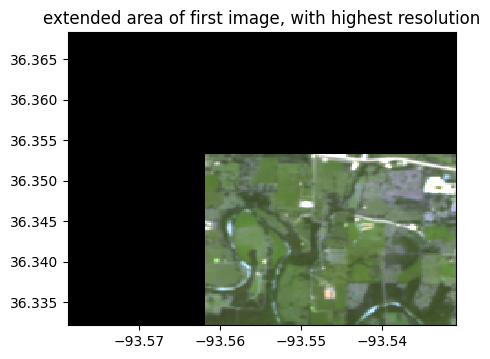
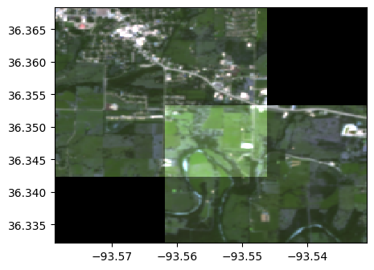

import rastereasy
Adjust size of two images
For some reasons, it could be interesting to have two images where pixels are perfectly aligned.
This can be done by extracting common areas (function extract_common_areas) or by extending the shapes for including both images (function extend_common_areas)
1) Extract common areas
help(rastereasy.extract_common_areas)
Help on function extract_common_areas in module rastereasy:
extract_common_areas(im1, im2, resolution='min', projection=None)
Extract the overlapping area between two GeoImages.
Parameters
----------
im1 : Geoimage
First input image
im2 : Geoimage
Second input image
resolution : {'min', 'max', None}, optional
How to handle resolution differences:
- 'min': Use the more precise (smaller pixel size) resolution
- 'max': Use the less precise (larger pixel size) resolution
- None: Keep original resolutions
Default is 'min'.
projection : str, optional
Projection system for output images. If None, uses im1's projection.
Example: "EPSG:4326"
Default is None.
Returns
-------
Geoimage, Geoimage
Two new Geoimages containing only the common overlapping area
Examples
--------
>>> # Extract common area with smallest pixel size
>>> common_im1, common_im2 = extract_common_areas(image1, image2)
>>>
>>> # Extract common area with specific projection
>>> common_im1, common_im2 = extract_common_areas(image1, image2, projection="EPSG:4326")
Notes
-----
This function is useful for preparing images for analysis or comparison when
they cover different geographical areas but have an overlapping region.
Read images
im1=rastereasy.open('./data/demo/RGB_common_2.tif')
im2=rastereasy.open('./data/demo/RGB_common_1.tif')
im1.info()
im2.info()
im1.colorcomp()
im2.colorcomp()
- Size of the image:
- Rows (height): 470
- Cols (width): 550
- Bands: 3
- Spatial resolution: 5.0 meters / degree (depending on projection system)
- Central point latitude - longitude coordinates: (36.34273470, -93.54640777)
- Driver: GTiff
- Data type: int16
- Projection system: EPSG:32615
- Nodata: -32768.0
- Given names for spectral bands:
{'1': 1, '2': 2, '3': 3}
- Size of the image:
- Rows (height): 145
- Cols (width): 145
- Bands: 3
- Spatial resolution: 20.068965517241377 meters / degree (depending on projection system)
- Central point latitude - longitude coordinates: (36.35530372, -93.56246171)
- Driver: GTiff
- Data type: int16
- Projection system: EPSG:32615
- Nodata: -32768.0
- Given names for spectral bands:
{'1': 1, '2': 2, '3': 3}


Get common areas with lowest and highest spatial resolution
im1_common_res1, im2_common_res1 = rastereasy.extract_common_areas(im1, im2,resolution = None)
im1_common_res2, im2_common_res2 = rastereasy.extract_common_areas(im1, im2,resolution = 'max')
im1_common_res1.info()
im1_common_res1.colorcomp(title='common area of first image, with its original resolution')
im2_common_res1.info()
im2_common_res1.colorcomp(title='common area of second image, with its original resolution')
im1_common_res2.info()
im1_common_res2.colorcomp(title='common area of first image, with highest resolution')
im2_common_res2.info()
im2_common_res2.colorcomp(title='common area of first image, with highest resolution')
- Size of the image:
- Rows (height): 246
- Cols (width): 280
- Bands: 3
- Spatial resolution: 5.0 meters / degree (depending on projection system)
- Central point latitude - longitude coordinates: (36.34774922, -93.55396373)
- Driver: GTiff
- Data type: int16
- Projection system: EPSG:32615
- Nodata: -32768.0
- Given names for spectral bands:
{'1': 1, '2': 2, '3': 3}

- Size of the image:
- Rows (height): 61
- Cols (width): 70
- Bands: 3
- Spatial resolution: 20.068965517241377 meters / degree (depending on projection system)
- Central point latitude - longitude coordinates: (36.34774508, -93.55401807)
- Driver: GTiff
- Data type: int16
- Projection system: EPSG:32615
- Nodata: -32768.0
- Given names for spectral bands:
{'1': 1, '2': 2, '3': 3}

- Size of the image:
- Rows (height): 61
- Cols (width): 69
- Bands: 3
- Spatial resolution: 20.072992700729927 meters / degree (depending on projection system)
- Central point latitude - longitude coordinates: (36.34770281, -93.55396278)
- Driver: GTiff
- Data type: int16
- Projection system: EPSG:32615
- Nodata: -32768.0
- Given names for spectral bands:
{'1': 1, '2': 2, '3': 3}

- Size of the image:
- Rows (height): 61
- Cols (width): 69
- Bands: 3
- Spatial resolution: 20.068965517241377 meters / degree (depending on projection system)
- Central point latitude - longitude coordinates: (36.34774561, -93.55390624)
- Driver: GTiff
- Data type: int16
- Projection system: EPSG:32615
- Nodata: -32768.0
- Given names for spectral bands:
{'1': 1, '2': 2, '3': 3}

2) Extend common areas
help(rastereasy.extend_common_areas)
Help on function extend_common_areas in module rastereasy:
extend_common_areas(
image1,
image2,
nodata_value=0,
resolution='min',
projection=None
)
Extend two images to cover their combined area, filling new areas with nodata value.
Parameters
----------
image1 : Geoimage
First input image
image2 : Geoimage
Second input image
nodata_value : int or float, optional
Value to use for areas outside the original image bounds.
Default is 0.
resolution : {'min', 'max'}, optional
How to handle resolution differences:
- 'min': Use the more precise (smaller pixel size) resolution
- 'max': Use the less precise (larger pixel size) resolution
Default is 'min'.
projection : str, optional
Projection to use for output images. If None, uses image1's projection.
Default is None.
Returns
-------
Geoimage, Geoimage
Two new Geoimages, each covering the combined area of both input images
Examples
--------
>>> extended_im1, extended_im2 = extend_common_areas(image1, image2)
Notes
-----
This function is useful for preparing images with different extents for comparison
or mathematical operations that require the same dimensions.
Get extended areas with lowest and highest spatial resolution
im1_extend_res1, im2_extend_res1 = rastereasy.extend_common_areas(im1, im2, resolution = 'min')
im1_extend_res2, im2_extend_res2 = rastereasy.extend_common_areas(im1, im2, resolution = 'max')
im1_extend_res1.info()
im1_extend_res1.colorcomp(title='extended area of first image, with lowest resolution')
im2_extend_res1.info()
im2_extend_res1.colorcomp(title='extended area of second image, with lowest resolution')
im1_extend_res2.info()
im1_extend_res2.colorcomp(title='extended area of first image, with highest resolution')
im2_extend_res2.info()
im2_extend_res2.colorcomp(title='extended area of second image, with highest resolution')
- Size of the image:
- Rows (height): 808
- Cols (width): 854
- Bands: 3
- Spatial resolution: 5.0 meters / degree (depending on projection system)
- Central point latitude - longitude coordinates: (36.35031190, -93.55493418)
- Driver: GTiff
- Data type: int16
- Projection system: EPSG:32615
- Nodata: 0
- Given names for spectral bands:
{'1': 1, '2': 2, '3': 3}

- Size of the image:
- Rows (height): 808
- Cols (width): 854
- Bands: 3
- Spatial resolution: 5.0 meters / degree (depending on projection system)
- Central point latitude - longitude coordinates: (36.35031190, -93.55493418)
- Driver: GTiff
- Data type: int16
- Projection system: EPSG:32615
- Nodata: 0
- Given names for spectral bands:
{'1': 1, '2': 2, '3': 3}

- Size of the image:
- Rows (height): 201
- Cols (width): 212
- Bands: 3
- Spatial resolution: 20.141509433962263 meters / degree (depending on projection system)
- Central point latitude - longitude coordinates: (36.35024423, -93.55484933)
- Driver: GTiff
- Data type: int16
- Projection system: EPSG:32615
- Nodata: 0
- Given names for spectral bands:
{'1': 1, '2': 2, '3': 3}

- Size of the image:
- Rows (height): 201
- Cols (width): 212
- Bands: 3
- Spatial resolution: 20.141509433962263 meters / degree (depending on projection system)
- Central point latitude - longitude coordinates: (36.35024423, -93.55484933)
- Driver: GTiff
- Data type: int16
- Projection system: EPSG:32615
- Nodata: 0
- Given names for spectral bands:
{'1': 1, '2': 2, '3': 3}
(0.5*(im1_extend_res2+im2_extend_res2)).colorcomp()
